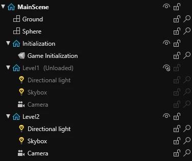

Key concepts
Beginner
This article highlights most important concepts that are used in the engine.
Scenes
A scene is a collection of entities that can be loaded and unloaded on demand. Most often, scenes contain different levels of a game or menus.
In Stride, Scenes can contain sub-scenes that can be loaded and unloaded on demand.

Entities
Entities represent different objects in a scene, like the player, enemies, walls, etc. These entities contain components that dictate how they behave.
Components
Components dictate how entities which they are attached to behave. For example: a player movement component that makes an entity move, when keyboard buttons are pressed.
In code, a component is a class that inherits StartupScript, SyncScript or AsyncScript.
using Stride.Engine;
namespace MyGame;
public class MyComponent : StartupScript
{
public override void Start()
{
// Write your code here
}
}
Script types
In Stride, a component can be created from one of 3 types of script:
- Startup Script - a script that runs only once when it's added.
- Sync Script - a script that runs when it's added and then every frame.
- Async Script - an asynchronous script that runs only once when it's added, but can await the next frame continuously.
For more information, read Types of script.
Assets and resources
An asset is a representation of an element in the project (like a texture), that contains a list of it's properties in the engine (e.g. .sdmat .sdprefab).
A resource is a file on the disk containing data, like an image (e.g. .png .mp3), that's used in the project.
Assets do not contain resource data. Instead, they reference a resource. For example: a texture asset (.sdtex) has a reference to an image (.png) that is located in the resource folder.
Project structure
A Stride project is separated into multiple project packages, which contain their own code, assets and resources.
For example, a new project consists of:
- MyGame - contains content for the game.
- MyGame.NameOfPlatform (such as MyGame.Windows) - contains content specific to the version of the game for a specific platform (like the window icon).
For more information, read Project structure.